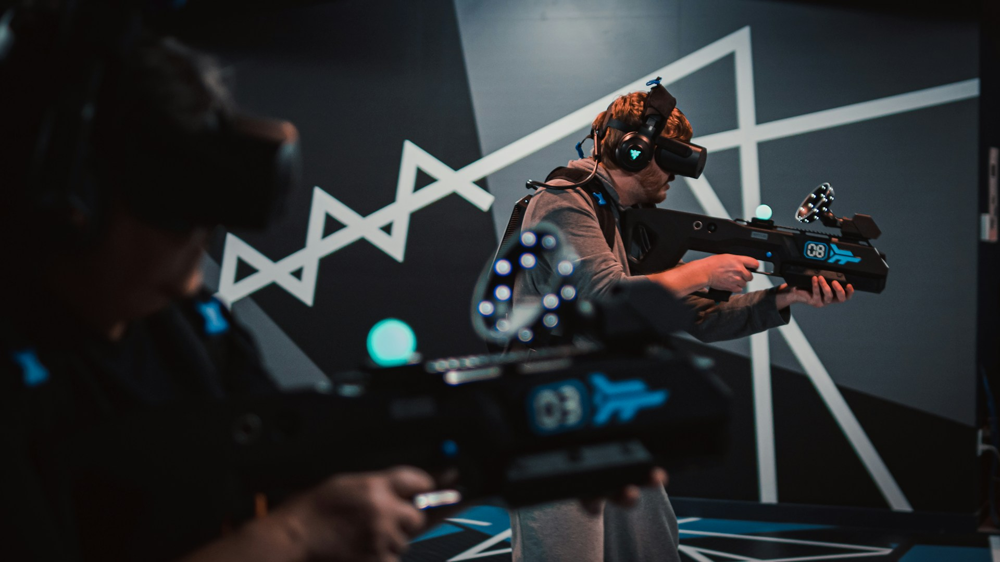

The following essay was written as the sole coursework piece for the module "The Changing Nature of War" at the University of Warwick, receiving first class honours.
Critically consider the implications of warfare increasingly migrating to the extended battlefield of social media and video gaming.
Throughout the 21st century, video games, memes and social media have become a mainstream part of culture and society. With this comes a variety of complex issues such as the simplification of conflict and violence, perception of war and propagation of stereotypes, especially to a large base of younger users (Massarat, 2022) at risk of manipulation and indoctrination. Video games, social media and memes are relatively new ways for a once somewhat underreported series of events to enter the mainstream. Propaganda, once produced in a ‘top-down’ manner by governments and ruling parties is now being challenged by videos, images, apps and games by both indie and mainstream developers alike, both intentionally and unintentionally promoting hate, violence and conflict to an intergenerational worldwide audience. Through the decades, the battlefield has moved from that of a mystical, far-away land only reported on through basic forms of communication, to being in our homes on a daily basis, with frequent interaction from many, leading to a rise of terrorist acts and a normalisation of conflict and war, with the potential to change attitudes towards and decisions taken in times of conflict.
This essay will critically consider the implications of warfare migrating to social media and video gaming, chiefly focusing on the many conflicts involving the Islamic State (ISIS) and those in the Middle East, as well as domestic terrorist acts, and their influence from and towards children online. These concepts and conflicts will be critiqued using a system of understanding issues, exploring why these issues are happening, moving on to their conception, noting social, societal and technological movements and advancements, and finally discussing how this may change the nature of conflict and violence in future instances.
Throughout time, warfare has been seen to change from that of sword and shield, close-quarters combat, to wars in which a combatant could meet their demise without ever knowing they were under threat. In the 19th and 20th centuries, conflict has shifted from the norms of conventional warfare following standards and laws such as the Geneva Convention, Rules of Engagement and the International Humanitarian Law, to a mix of tactics and conventions combining both regular and irregular methods. This mix of tactics such as IED distant warfare, misinformation, drones, kidnapping and propaganda alongside conventional warfare; open confrontation between two states in a more formal setting, for example, has called for discussions between NATO militaries to coin a new phrase to describe it, that being ‘hybrid warfare’ (Hoffman, 2007).
As can be seen in Ukraine in 2014 to the present day, as well as The Islamic State of Iraq and the Levant / Syria (ISIL/ISIS) gaining global prominence in 2014, these hybrid threats were now able to enter once peaceful areas undetected, allowing for change political events and outcomes, such as the Russian ‘Little green men’ bringing about the 2014 Crimean status referendum, worldwide terror activity alongside indoctrination and recruitment through use of social media and the internet. Hybrid warfare has allowed the boundaries between war and peace to be blurred. In turn, hybrid warfare has exploited opportunities made available by a globalised, online world in which enemies and adversaries can be significantly weakened without having to expend conventional resources, often without having to face an enemy. Alongside this, the very character of warfare is changing in itself. Combatants, militaries and fighting forces are able to acquire, process, disseminate, and use information at an unprecedented rate (Gray, 1996), and as mentioned above, although this is allowing a new generation of weapons such as drones and IEDs to enter the battlefield and bring about asymmetric warfare, it is also allowing combatants and the onlookers alike the ability to spectate war in real-time, whilst indoctrinating, recruiting and moulding potential and current fighters towards their cause and initiatives through the use of coercive and manipulative actions (Almohammad, 2018).
Alongside the change in warfare throughout history, there have also been significant changes in video games and social media since their mainstream adoption in the 1970s and late 1990s respectively. Since the mainstream popularity and creation of the video game that would be recognised today, video games have consistently explored the theme of war and conflict. From their beginnings in 1975 with titles such as Space War (1962), Tank (1974) and Gun Fight (1975), players have been able to re-enact basic combat scenarios such as human-to-human combat, or drive tanks with ‘Real tank controls’, canon fire, shell explosions and the ability to have ‘Your own tank command’ (Neil, 2018). Evolving from this, players are now able to simulate historical and current battles, in games such as Call of Duty, Battlefield, Iraq War and Six Days in Fallujah using accurate weaponry, tactics, locations and timelines, offering immersive experiences that allow the player to experience conflict for themselves, along with the social responsibility and moral challenges that may arise.

Bibliography